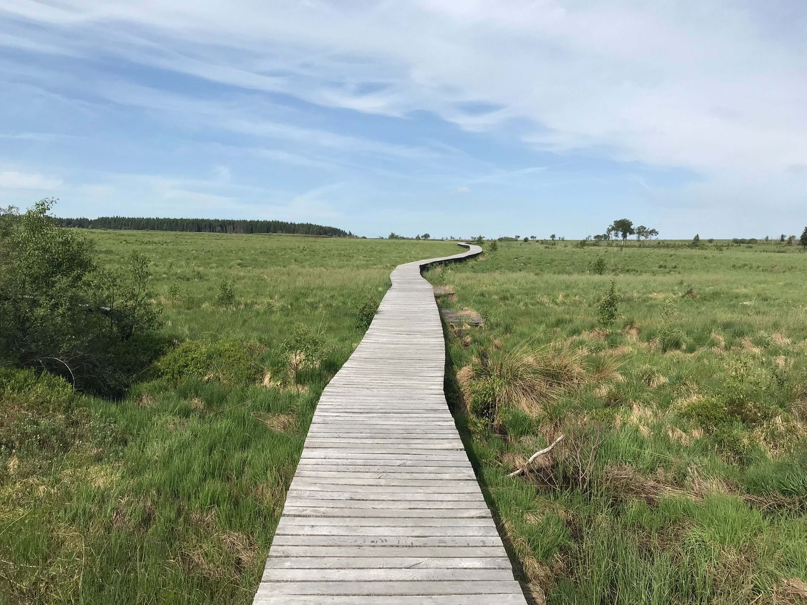

Les Gloutonnes vous présente un guide complet des sphaignes des Hautes
Fagnes, ces mousses extraordinaires qui jouent un rôle écologique
crucial dans les tourbières belges. Découvrez la diversité des espèces
de Sphagnum présentes en Belgique, avec leurs caractéristiques
spécifiques : Sphagnum medium et Sphagnum divinum (complexe autrefois
appelé magellanicum) aux teintes rouge pourpre, Sphagnum palustre vert
pâle, Sphagnum capillifolium rouge-rosé, Sphagnum cuspidatum vert vif
des zones aquatiques, Sphagnum fallax vert jaunâtre à doré, et bien
d'autres. Notre guide détaille la coloration, l'habitat, la taille et
la rareté de chaque espèce, ainsi que les meilleurs endroits pour les
observer. Les sphaignes retiennent souvent environ 15 à 25 fois leur
poids sec en eau (parfois davantage selon l'espèce) et créent les
conditions acides favorables aux plantes carnivores. Elles jouent
aussi un rôle majeur dans le stockage du carbone des sols et la
régulation hydrique. Découvrez-les de façon responsable en respectant
ces milieux fragiles et protégés.
Les sphaignes des Hautes Fagnes
Découvrez ces mousses exceptionnelles qui constituent l'âme des
tourbières
Le trésor méconnu des tourbières
Les sphaignes sont des mousses extraordinaires, véritables
architectes des tourbières. Leur capacité exceptionnelle à
retenir l'eau (souvent environ 15 à 25 fois leur poids sec,
parfois davantage selon l'espèce) et à acidifier leur
environnement en fait des organismes uniques dans le règne
végétal.
Dans les Hautes Fagnes belges, notamment le long de la vallée de
la Hoëgne, on peut observer différentes espèces de sphaignes aux
colorations variées allant du vert tendre au rouge profond, en
passant par des teintes dorées surprenantes.
Ces plantes primitives jouent un rôle écologique crucial : elles
créent les conditions acides et humides nécessaires à
l'installation des plantes carnivores, participent à la
séquestration du carbone et régulent le cycle de l'eau dans ces
écosystèmes fragiles.

Les sphaignes emblématiques des Hautes Fagnes
Fiches descriptives générées automatiquement depuis ma base de données.
Chargement des sphaignes...
Aucune sphaigne ne correspond à tes critères
Modifie les filtres ou contacte-moi pour des recommandations personnalisées.
L'importance écologique des sphaignes
🌍
Stockage du carbone
Les tourbières à sphaignes stockent environ un tiers du carbone
des sols mondiaux, alors qu'elles ne couvrent qu'environ 3 %
des terres émergées. En Belgique, les tourbières des Hautes
Fagnes constituent un puits de carbone irremplaçable.
💧
Régulation hydrique
Grâce à leur capacité d'absorption exceptionnelle, les sphaignes
jouent un rôle de "réservoir naturel", stockant l'eau en période
pluvieuse et la relâchant progressivement lors des périodes
sèches, limitant ainsi les inondations en aval.
🧪
Archéologie naturelle
Le milieu acide et anaérobie de la tourbe de sphaigne préserve
la matière organique pendant des millénaires. Les tourbières des
Hautes Fagnes sont de véritables archives naturelles qui
racontent l'histoire de nos paysages et de notre climat.
Découvrir les sphaignes de façon responsable
Les zones tourbeuses des Hautes Fagnes sont des milieux
extrêmement fragiles. Pour préserver ces écosystèmes uniques
tout en profitant de leur beauté, voici quelques recommandations
:
1
Rester sur les caillebotis
Les passerelles en bois (caillebotis) permettent de
traverser les zones tourbeuses sans piétiner la végétation
fragile. Un pas en dehors peut endommager des années de
croissance de sphaignes.
2
Observer sans prélever
La cueillette est strictement interdite dans la réserve
naturelle. Photographiez les sphaignes plutôt que de les
collecter, et privilégiez les zooms pour éviter de vous
approcher excessivement.
3
Choisir la bonne saison
La fin de l'été (août-septembre) est la période idéale
pour observer les sphaignes dans toute leur splendeur
colorée. De plus, c'est à cette période que les tourbières
sont généralement moins humides, réduisant le risque
d'endommager les sols fragiles.
4
Se faire accompagner
Les Hautes Fagnes proposent des visites guidées avec des
naturalistes qui vous feront découvrir toutes les
subtilités de ces écosystèmes fragiles, tout en vous
aidant à identifier les différentes espèces de sphaignes.
La coloration des sphaignes vient surtout de pigments
phénoliques (sphagnorubines chez les formes rouges) et de
caroténoïdes, qui filtrent une partie des rayonnements UV. Les
teintes rouges à pourpres s'intensifient souvent en pleine
lumière, tandis que les formes plus jaunes ou dorées doivent
beaucoup aux caroténoïdes. D'où des coussins plus colorés au
soleil que sous couvert — un « coup de soleil » utile pour
ces mousses.
Oui, il est possible de cultiver des sphaignes chez soi,
particulièrement dans un terrarium humide ou un paludarium.
Elles nécessitent une eau acide (pH 4-5), de préférence de
l'eau de pluie ou déminéralisée, une luminosité modérée sans
soleil direct, et une humidité constante. Ne prélevez jamais
de sphaignes dans la nature (surtout dans les zones protégées
comme les Hautes Fagnes) ! Il existe des sources commerciales
légales qui vendent de la sphaigne vivante cultivée de manière
durable. Les sphaignes sont d'excellentes compagnes pour les
plantes carnivores en culture.
La sphaigne est la plante vivante, tandis que la tourbe est le
matériau qui résulte de sa décomposition partielle en
conditions anaérobies (sans oxygène). La tourbe est composée
de sphaignes mortes accumulées sur des milliers d'années dans
des conditions d'humidité permanente. L'extraction de tourbe
pour l'horticulture est problématique sur le plan
environnemental car elle libère de grandes quantités de CO₂
stocké et détruit des habitats uniques formés sur des
millénaires. C'est pourquoi des alternatives à la tourbe sont
de plus en plus recherchées pour les jardins et
l'horticulture.
Historiquement, les sphaignes ont été utilisées comme
pansement naturel pendant les guerres mondiales en raison de
leurs propriétés absorbantes et légèrement antiseptiques. Ces
mousses contiennent un composé appelé "sphagnol" qui a des
propriétés antibactériennes. Elles ont également été utilisées
dans certaines médecines traditionnelles pour traiter les
problèmes oculaires et cutanés. Cependant, leur plus grande
valeur réside désormais dans leur rôle écologique et la
protection des écosystèmes qu'elles créent, plutôt que dans
leur exploitation directe.
Passionné par les sphaignes et les tourbières ?
Pour découvrir ces plantes fascinantes dans leur habitat naturel
ou en savoir plus sur leur rôle dans les écosystèmes des
tourbières, n'hésitez pas à me contacter. Je partage volontiers
ma passion pour ces mousses extraordinaires qui accompagnent si
bien les plantes carnivores.